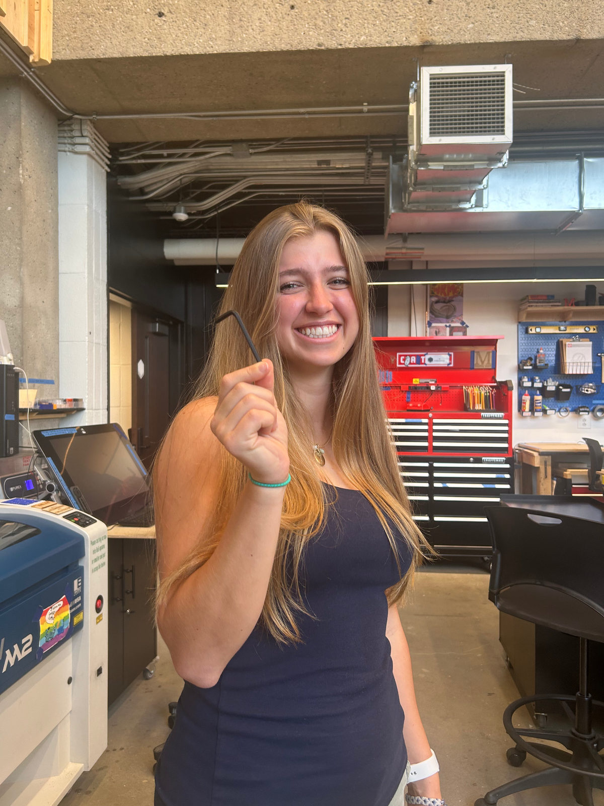
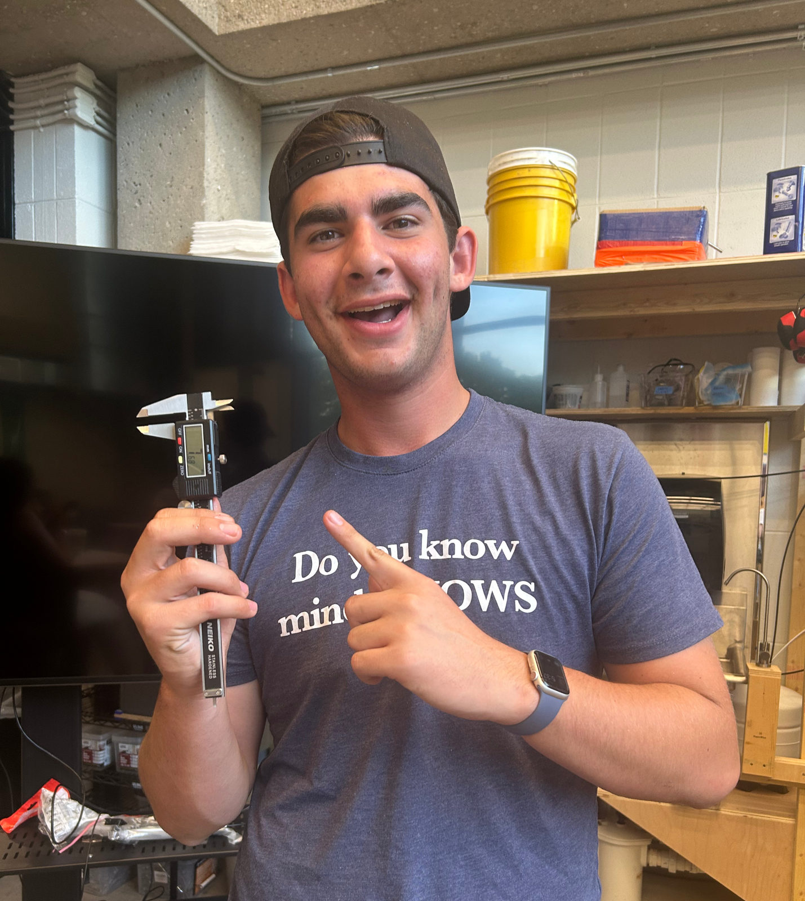
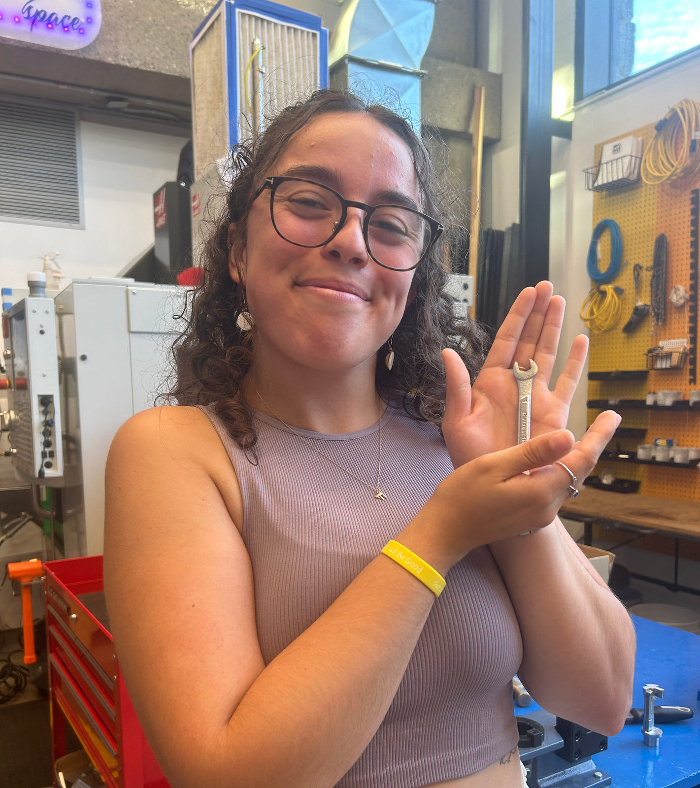

Our Story
From a small Formula car team to a campus-wide community for anyone curious about engineering.
How we got here
The Middlebury Engineering Society (MES) began as the Middlebury Formula Car Club back in 2021. For the first few years, our small team focused on designing and building a race-worthy car for the collegiate formula circuit. But as founding members graduated, taking their technical experience with them, the club struggled to sustain momentum. We realized something important: our club wasn't accessible. We were going about bringing engineering into a non-engineering school wrong.
Building a race car is exciting, but it's also intimidating, and not everyone feels ready to dive into such an advanced, technical challenge. Our narrow focus limited who felt welcome and who felt capable of contributing.
So in 2023, we reimagined the organization with a little help from the Middlebury Consulting Club. The Middlebury Engineering Society was born, with a new mission: make engineering accessible for everyone, regardless of prior experience or interest level.

Explore engineering on your own terms
MES is now a community where students can explore engineering at their own pace. Whether you want to learn to laser cut for a personal project, tackle a long-term mechanical build, or lead STEM outreach events, there's a place for you here. As of 2024 we're officially part of the Middlebury Maker Space, and we focus on three pillars:

Education
Biweekly Maker Space trainings help students get certified and explore specific tools like 3D printers, laser cutters, and Adobe Illustrator.

Projects
We run collaborative, student-led engineering projects across semesters. Our most recent: building a working soapbox car from scratch.

Community Outreach
We partner with other student orgs to bring STEM to the broader community. In Spring 2024, we hosted a badge workshop with Women in Health Sciences and the Girl Scouts.
Maker Space affiliation
We're proud to call the Middlebury Maker Space home. Most of our meetings and workshops happen in the Maker Space in Johnson, where we can use everything from 3D printers and laser cutters to a wood shop and CNC machines.
We work closely with Daniel Houghton, the Maker Space's director, to help students turn their ideas into reality. If you want Maker Space programming beyond MES, you'll find independent workshops, open lab hours, and certifications on their website.
Visit the Maker Space
Built for three-year students and busy schedules
Many of our members, especially those in the Dartmouth or Columbia Dual Degree programs, spend only three years at Middlebury. That makes it hard to finish long-term projects, pass down technical knowledge, and gain leadership experience. Students also lead busy lives, so getting involved needs to be flexible. So we've structured the organization a little differently.
Project-based leadership
Instead of centering the club on one multi-year effort (like the original Formula Hybrid car), we now focus on smaller, semester- or year-long projects. This lets students:
- Complete meaningful work in a shorter time frame
- Get hands-on engineering experience
- Lead projects without needing to be at Middlebury all four years
Any student can propose a project and apply to be a Project Leader. Once approved, they build and guide a team through design, prototyping, and completion. Project Leaders sit on the executive board for the duration of their project.
Executive board structure
President
Oversees the organization and supports all project and committee leaders.
Workshop Lead
Designs and runs the Maker Space workshop curriculum.
Outreach & Communications Manager
Coordinates social media, newsletters, and community partnerships.
Treasurer
Manages funding, purchases, and budgets for club activities.
Project Leads
Lead short- or medium-term builds with small teams. These roles are flexible and rotate as projects are completed.
Interested in leading?
We're always looking for new leaders, whether you want to run a project, design a workshop, or help grow our community. Reach out here or stop by one of our meetings.
Meet the Board
Malia Pollock
Founder & Co-President
Ben Horowitz
Co-President & Workshop Lead
Alex Glickman
Project Lead
Weronika Wozny
Outreach & Communications Manager
Connor Stephens
Treasurer
Daniel Houghton
Maker Space Founder